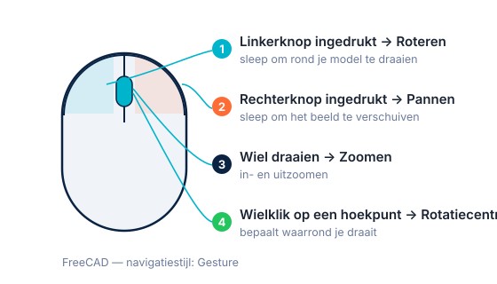

Navigeren in 3D & de feature-boomNaviguer en 3D & l'arbre des fonctionsNavigating in 3D & the feature tree
Voor je iets tekent, moet je je vlot kunnen bewegen in de 3D-ruimte en begrijpen hoe FreeCAD je werk opbouwt en onthoudt. Drie dingen staan centraal: de basisvlakken waarop je tekent, de modelboom die je hele werkwijze bewaart, en het navigeren met de muis.Avant de dessiner : savoir se déplacer dans l'espace 3D et comprendre comment FreeCAD construit et mémorise votre travail — les plans de base, l'arbre du modèle et la navigation.Before drawing: move around in 3D space and understand how FreeCAD builds and remembers your work — the base planes, the model tree and navigation.
- de drie basisvlakken (XY/XZ/YZ) en de oorsprong herkennenreconnaître les trois plans de base et l'originerecognise the three base planes and the origin
- de modelboom lezen en begrijpen wat "1 body = 1 solid" betekentlire l'arbre et comprendre « 1 corps = 1 solide »read the model tree and understand "1 body = 1 solid"
- vlot roteren, pannen en zoomen met Gesturetourner, déplacer et zoomer avec Gesturerotate, pan and zoom with Gesture
- de navigatiekubus gebruiken om je oriëntatie te herstellenutiliser le cube de navigationuse the navigation cube to recover orientation

01De 3D-ruimte: drie basisvlakken en de oorsprongL'espace 3D : trois plans de base et l'origine3D space: three base planes and the origin
Een 3D-model leeft in een ruimte met drie richtingen: X (links-rechts), Y (voor-achter) en Z (omhoog-omlaag). Het punt waar ze elkaar kruisen heet de oorsprong (0, 0, 0): je vaste ankerpunt. Maten die je "vanaf de oorsprong" definieert, liggen muurvast.Un modèle 3D vit dans un espace à trois directions : X (gauche-droite), Y (avant-arrière) et Z (haut-bas). Leur point de croisement est l'origine (0, 0, 0), votre ancrage fixe.A 3D model lives in a space with three directions: X (left-right), Y (front-back) and Z (up-down). Where they cross is the origin (0, 0, 0): your fixed anchor.
In FreeCAD teken je nooit zomaar "in de lucht". Elke 2D-schets begint op een vlak. Er zijn drie standaard basisvlakken:Dans FreeCAD, on ne dessine jamais « dans le vide ». Chaque croquis 2D commence sur un plan. Il y a trois plans de base :In FreeCAD you never draw "in mid-air". Every 2D sketch starts on a plane. There are three base planes:
- XY-vlak — horizontaal, alsof je van bovenaf kijkt. Het meest gebruikte startvlak, bv. voor de bodem van een behuizing.Plan XY — horizontal, vue de dessus. Le plan de départ le plus courant.XY plane — horizontal, as if seen from above. The most-used starting plane.
- XZ-vlak — verticaal, alsof je van voren kijkt.Plan XZ — vertical, vue de face.XZ plane — vertical, seen from the front.
- YZ-vlak — verticaal, alsof je van opzij kijkt.Plan YZ — vertical, vue de côté.YZ plane — vertical, seen from the side.
Voor onze behuizing tekenen we de bodem op het XY-vlak en bouwen we naar boven (Z) op. Onthoud het idee: eerst een vlak, dan een 2D-schets, dan pas een 3D-vorm.Pour notre boîtier, on dessine le fond sur XY et on monte en Z. Retenez : d'abord un plan, puis un croquis 2D, puis une forme 3D.For our enclosure we draw the bottom on XY and build upward (Z). Remember: first a plane, then a 2D sketch, then a 3D shape.
02De modelboom: je werkwijze, stap voor stap bewaardL'arbre du modèleThe model tree
Links staat de modelboom (feature-boom). Dit is het hart van parametrisch werken: elke stap wordt als een aparte regel bewaard, in volgorde. Teken je een schets, dan verschijnt die in de boom; maak je er een vorm van, dan komt die bewerking eronder. Je bouwt je model op als een stapel logische stappen die je later opnieuw kunt openen en wijzigen.À gauche se trouve l'arbre du modèle. C'est le cœur du paramétrique : chaque étape est enregistrée, dans l'ordre. Un croquis apparaît dans l'arbre ; la forme qui en découle vient en dessous. Le modèle est une pile d'étapes réouvrables.On the left is the model tree. This is the heart of parametric work: every step is stored, in order. Draw a sketch and it appears in the tree; turn it into a shape and that operation sits below it. Your model is a stack of steps you can reopen later.
Bovenaan staat een Body (lichaam): de container voor één samenhangend onderdeel. De vuistregel voor beginners — en die houden we aan — is: één Body = één solid. Een tweede los onderdeel (bv. een deksel) krijgt gewoon een tweede Body. In elke Body zit ook Origin; klap je dat open, dan vind je de drie basisvlakken en assen terug.En haut, un Body (corps) : le conteneur d'une pièce cohérente. Règle débutant : 1 corps = 1 solide. Une 2e pièce (un couvercle) = un 2e corps. Chaque corps contient Origin (les plans et axes).At the top is a Body: the container for one coherent part. Beginner rule: 1 Body = 1 solid. A second separate part (a lid) gets a second Body. Each Body also contains Origin (the planes and axes).
De modelboom is geen "laag" zoals in een tekenprogramma, maar een geschiedenis: de volgorde telt. Later leer je hoe je in die geschiedenis terugspringt om iets te wijzigen — zonder opnieuw te beginnen.L'arbre n'est pas un « calque » mais un historique : l'ordre compte.The tree isn't a "layer" but a history: order matters.
03Navigeren met de muis (Gesture)Naviguer à la souris (Gesture)Navigating with the mouse (Gesture)
In hoofdstuk 2 kozen we de stijl Gesture. Even oefenen tot het in de vingers zit, loont: zo draai je later moeiteloos rond je behuizing om elke kant te bekijken.Au chapitre 2 nous avons choisi Gesture. S'entraîner un peu paie : vous tournerez aisément autour de votre boîtier.In chapter 2 we chose Gesture. A little practice pays off: you'll easily rotate around your enclosure.

- ROTHoud de linkermuisknop ingedrukt en sleep → je roteert.Waarom: zo bekijk je een onderdeel langs alle kanten en controleer je gaten en uitsparingen.Maintenez le bouton gauche et glissez → rotation.Pourquoi : pour examiner la pièce sous tous les angles.Hold the left button and drag → rotate.Why: to inspect the part from every side.
- PANHoud de rechtermuisknop ingedrukt en sleep → je pant.Waarom: verschuiven zonder je oriëntatie te verliezen.Maintenez le bouton droit et glissez → pan.Pourquoi : déplacer sans perdre l'orientation.Hold the right button and drag → pan.Why: shift the view without losing orientation.
- ZOOMDraai aan het muiswiel → in/uit zoomen.Waarom: inzoomen helpt om nauwkeurig een rand aan te klikken.Tournez la molette → zoom.Pourquoi : zoomer pour cliquer précisément une arête.Turn the wheel → zoom.Why: zooming helps click an edge precisely.
- CTRKlik met het wiel op een hoekpunt → verplaatst het rotatiecentrum.Waarom: zo draai je rond het detail dat je wil bekijken.Clic molette sur un sommet → déplace le centre de rotation.Pourquoi : tourner autour du détail voulu.Click the wheel on a vertex → moves the rotation centre.Why: rotate around the detail you want.
Oriëntatie kwijt? Gebruik de navigatiekubus rechtsboven: klik op een vlak (Boven, Voor, Rechts …) om recht op dat aanzicht te springen.Perdu ? Cliquez sur une face du cube de navigation (Haut, Avant, Droite…).Lost? Click a face of the navigation cube (Top, Front, Right…).
Dit lijkt "alleen maar kijken", maar het is de werkruimte van je behuizing. Zodra je de bodemplaat tekent, draai je er constant omheen om gaten, randen en de pasvorm van het deksel te controleren.Cela semble « juste regarder », mais c'est l'atelier de votre boîtier : on tourne sans cesse pour vérifier trous, arêtes et ajustement du couvercle.This feels like "just looking", but it's your enclosure's workshop: you constantly rotate to check holes, edges and the lid fit.
Maak via Part Design een nieuwe Body (we tekenen nog niets). Klap de Origin open en zoek de drie vlakken (XY, XZ, YZ). Oefen 2 minuten: roteren (links), pannen (rechts), zoomen (wiel), en spring met de kubus naar Boven, Voor en Rechts.Créez un Body (Part Design), ouvrez l'Origin, repérez XY/XZ/YZ, puis entraînez-vous (rotation/pan/zoom) et utilisez le cube.Create a Body (Part Design), open the Origin, find XY/XZ/YZ, then practise (rotate/pan/zoom) and use the cube.
04Veelgemaakte foutenErreurs fréquentesCommon mistakes
- Roteren werkt "verkeerd". Je stijl staat wellicht niet op Gesture. Wissel via rechtsklik → Navigatiestijlen → Gesture (H02).Rotation « inversée ». Le style n'est pas Gesture : clic droit → Styles de navigation → Gesture (H02).Rotation feels "wrong". Style probably isn't Gesture: right-click → Navigation styles → Gesture (H02).
- Je "verdwaalt". Gebruik de navigatiekubus of een standaardaanzicht om terug te springen.Vous vous « perdez ». Utilisez le cube ou une vue standard.You get "lost". Use the cube or a standard view to jump back.
- Vlakken verwarren. XY = bovenaanzicht. Twijfel je, spring dan met de kubus naar Boven.Confondre les plans. XY = dessus. Au doute, allez sur Haut.Confusing planes. XY = top. If unsure, jump to Top.
05Samenvatting
Je werkt in een 3D-ruimte met een oorsprong. Je tekent altijd eerst op een basisvlak (XY = bovenaanzicht). De modelboom bewaart elke stap; bovenaan een Body (1 body = 1 solid) met de Origin. Met Gesture roteer je (links), pan je (rechts) en zoom je (wiel).Espace 3D avec origine ; on dessine d'abord sur un plan (XY = dessus) ; l'arbre garde l'historique ; Gesture pour naviguer.3D space with an origin; you sketch on a plane first (XY = top); the tree stores history; Gesture for navigation.
- Werkwijze: vlak → 2D-schets → 3D-vorm. XY = bovenaanzicht.Plan → croquis 2D → forme 3D. XY = dessus.Plane → 2D sketch → 3D shape. XY = top.
- Modelboom = geschiedenis; 1 Body = 1 solid.Arbre = historique ; 1 corps = 1 solide.Tree = history; 1 Body = 1 solid.
- Gesture: roteren = links, pannen = rechts, zoomen = wiel.Gesture : gauche = rotation, droit = pan, molette = zoom.Gesture: left = rotate, right = pan, wheel = zoom.